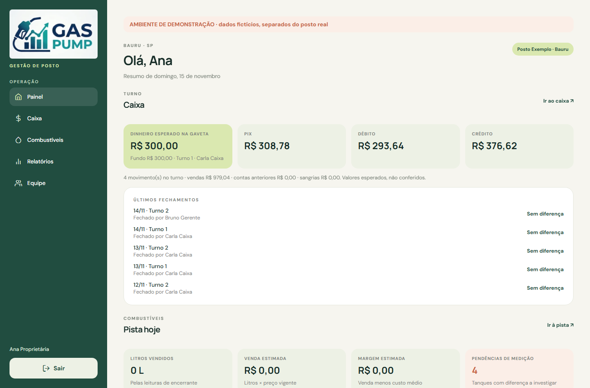
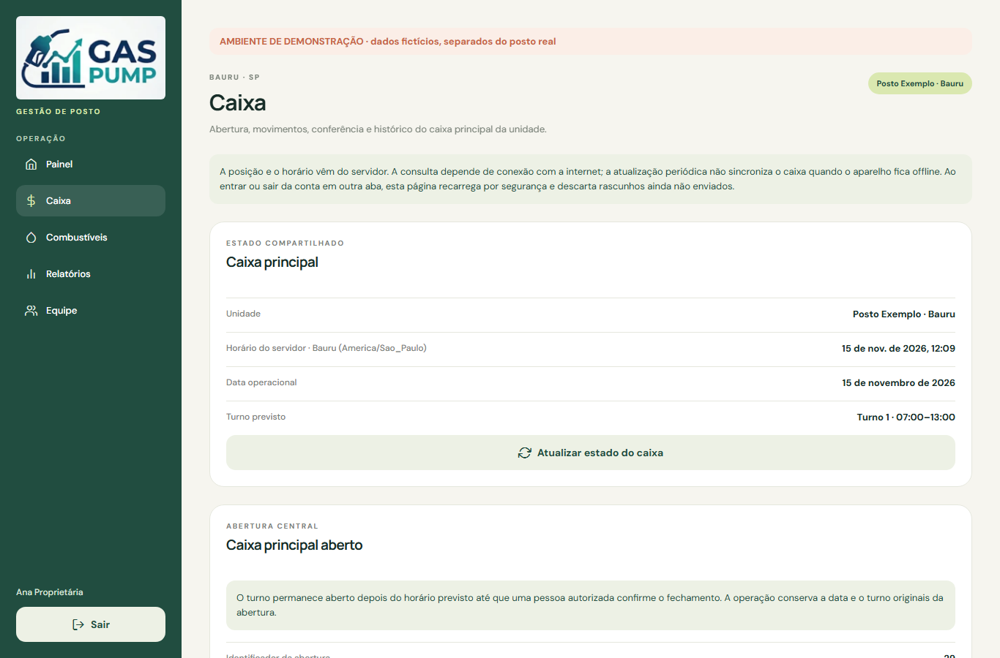
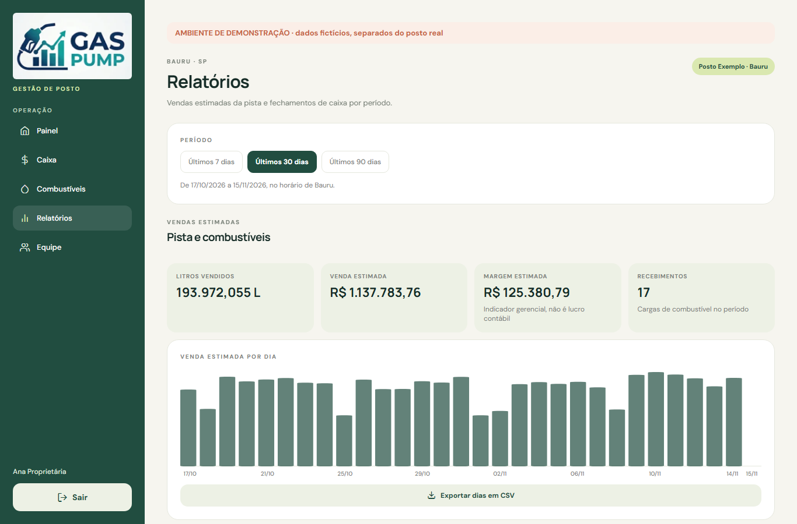
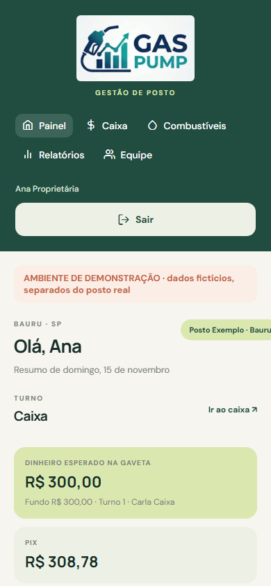

Manual da equipe · Gestão de posto · versão de novembro de 2026
O GAS PUMP organiza o dia a dia do posto: abertura e fechamento do caixa por turno, leituras das bombas, estoque dos tanques, preços, margem por litro e relatórios. Funciona no navegador do computador e do celular, em https://posto.trustcorp.com.br.
Não há cadastro público. O proprietário convida cada pessoa em Equipe: informa o e-mail e a função, e o sistema gera um link de convite válido por 72 horas. Envie o link por um canal privado (WhatsApp, por exemplo). A pessoa abre o link e cria a própria senha (mínimo de 12 caracteres).
| Função | Pode fazer |
|---|---|
| Proprietário | Tudo. Também convida, troca funções, bloqueia contas e gera links de redefinição de senha. |
| Gerente | Cadastros, preços, recebimentos e ajustes da pista; abre, movimenta e fecha o caixa; vê a equipe. |
| Caixa | Abre, movimenta e fecha o caixa; vê painel e relatórios do caixa. |
| Frentista | Registra leituras de bico e medições dos tanques; vê o painel da pista. |
| Consulta financeira | Vê caixa, pista e relatórios, sem alterar nada. |
Esqueci a senha: a equipe pede ao proprietário um link de redefinição (vale 30 minutos, uso único). O proprietário recupera a própria senha pelo administrador do servidor.
É a primeira tela depois do login. Mostra, para o seu perfil:

Feita pelo proprietário ou gerente, em Combustíveis, nesta ordem:
Turnos de Bauru: segunda a sábado 06h–14h e 14h–22h; domingos e feriados 07h–13h e 13h–19h. O sistema escolhe o turno pelo relógio do servidor.
Dinheiro esperado = fundo + recebimentos em dinheiro + suprimentos − sangrias. Fundo, sangria e suprimento são guarda de dinheiro, não receita nem despesa.

| Quando | O que fazer | Botão |
|---|---|---|
| Fim de cada turno | Anotar o encerrante final de cada bico. O sistema calcula litros, venda estimada e custo. | Registrar leitura de pista |
| Chegada do caminhão | Fornecedor, tanque, volume, custo por litro e número da nota (opcional). | Receber combustível |
| Periodicamente (ex.: semanal) | Medir o tanque com régua/sensor. Diferenças viram pendência a investigar. | Medir tanque fisicamente |
| Mudança de preço | Novo preço com data e hora. Faça uma leitura de todos os bicos no mesmo horário. | Registrar preço |
| Correção autorizada | Entrada ou saída com justificativa (só proprietário/gerente). | Ajustar estoque |
| Troca ou zeramento do medidor | Novo encerrante com justificativa. | Troca/reset de medidor |
Margem estimada = venda estimada − custo médio do combustível vendido. É um indicador de gestão, não lucro contábil. Sem custo de compra conhecido, a margem aparece como indisponível.
Escolha 7, 30 ou 90 dias. O relatório mostra:
Os botões Exportar em CSV geram planilhas para Excel (ponto e vírgula, vírgula decimal).

O mesmo endereço funciona no celular. O menu fica no topo. Dica: no navegador do celular, use Adicionar à tela inicial para abrir como aplicativo.

Para treinar sem risco, use https://gas-pump-demo.up.railway.app. Ele tem um banco separado, com 30 dias de pista e 14 dias de caixa fictícios, e mostra a faixa AMBIENTE DE DEMONSTRAÇÃO em todas as telas. Nada feito lá aparece no posto real.
| Perfil | |
|---|---|
| Proprietária | proprietario@gaspump.test |
| Gerente | manager@gaspump.test |
| Caixa | cashier@gaspump.test |
| Frentista | attendant@gaspump.test |
| Consulta financeira | finance@gaspump.test |
A senha da demonstração é informada pelo administrador.
Não se apaga. No caixa, registre o movimento correto e explique no fechamento. Na pista, o gerente faz um ajuste justificado.
Ela vem de litros (diferença de encerrantes) × preço vigente. Não é a soma das vendas do PDV nem documento fiscal.
Não. Toda gravação é confirmada no servidor. Sem conexão, a tela avisa e nada é salvo pela metade.
Pode. Se outra pessoa alterar o caixa enquanto você revisa, o sistema pede para atualizar e revisar de novo antes de gravar.